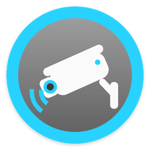
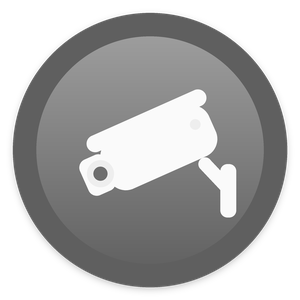
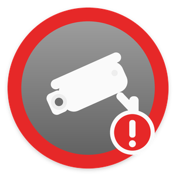
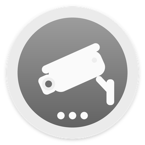

Beta. These drivers follow Ubiquiti's published Protect Integration API exactly, but they have not yet been confirmed on a real UniFi system. Please share your driver log (set Log Level to Debug and run Print Diagnostics) so pictures, video, alerts and rings can be confirmed.
Set up every camera in three steps
- Upload both drivers with Driver > Add or Update Driver or Agent:
DirectorLink-UniFi-Protect.c4zandDirectorLink-UniFi-Protect-Camera.c4z. Keep these exact file names: a "(1).c4z" copy installs as a separate driver. Search DirectorLink and add DirectorLink · UniFi Protect to the room where new cameras should appear. It shows in the project as UniFi Protect Hub. - Make an API key in the UniFi console: Settings > Control Plane > Integrations > Create API Key. In the hub's properties, enter the console's Console Address (its IP address) and paste the API Key. Status shows Connected and Found On Console lists the cameras.
- Run Actions > Add New Cameras. Each camera and doorbell is added with its UniFi name and set up completely: pictures, live video, events. Then drag each camera to its room.
Cameras added to UniFi Protect later: the hub notices them (New Cameras Found); run Add New Cameras again. Only the new ones are added.
How it works
| What | How |
|---|---|
| Connection | Only Ubiquiti's official Protect Integration API on the console (/proxy/protect/integration/v1) with your API key. No username or password, no private API, no cloud. The key is sent to the console you enter and nowhere else, and it never appears in a log. |
| Pictures | The hub runs a small picture server on the controller (port 47080). Each camera's Control4 camera page points at it with that camera's own random login, so Control4 apps and DirectorLink get the pictures, and the hub fetches them from the console with the key. A picture is kept at most one second. |
| Live video | The console's stream, handed to the Control4 apps (Control4 OS 3.3.2 or newer). Live Video chooses RTSP (port 7447), the default and the one to try first, or RTSPS (port 7441), which is encrypted but may not play in Control4 apps. With Create Streams on Automatic the hub switches on the streams of cameras that have none in UniFi Protect. |
| Events | Smart detections, motion and doorbell rings arrive at once over the console's event stream (WebSocket) and go to their camera. |
The alerts tile
The hub appears in Composer as UniFi Protect Hub. Add it to a room menu (for example Security) in Composer's Navigator settings, and rename it to something homeowners understand, such as Camera Alerts. Tapping the tile turns alerts on or off for every camera.

AlertA camera raised an alert
Alerts offOff or snoozed
AttentionThe console or a camera is offline
WorkingConnecting or adding camerasAlerts off pauses the Alert events and notifications. Detection events (motion, person, vehicle...) keep running automations, and doorbells keep ringing.
One notification for all cameras
When UniFi Protect Hub → Camera Alert → Send notification "LAST_ALERT_TYPE at LAST_ALERT_CAMERA" with the attachment Snapshot from the camera that raised the alert or rang. When Doorbell Ring → notify "Someone at LAST_RING_CAMERA".
Properties
| Property | Description |
|---|---|
| Status | What the hub is doing and what to do next. |
| Console | The console's name and its UniFi Protect version. |
| Cameras · Found On Console | Cameras in the project and which are offline; cameras and doorbells on the console, and how many are not added yet. |
| Event Connection | The console's event stream: live since when, how many messages. |
| Picture Server · Last Error | Where the picture server listens and how many pictures it served; the last thing that went wrong, with its time. |
| Console Address · API Key | The console's IP address, and the API key made in Settings > Control Plane > Integrations. |
| Live Video | RTSP (port 7447, default) or RTSPS (port 7441). Try RTSP first. |
| Create Streams | Automatic (default): switch on the streams of cameras that have RTSP off in UniFi Protect. Off: use only streams already on. |
| Ignored Cameras | Names or ids of cameras that Add New Cameras skips. |
| Picture Server Port | 47080 by default. Change it only if another driver uses that port. |
| Alerts · Default Alert On · Snapshot With Alerts | Master switch; Alert On for new cameras; a snapshot for notifications. |
| Log Level | Also sets every camera's. Debug logs every request and event (never the key or stream tokens) to the Lua tab and Director's driver log. |
Actions
| Action | What it does |
|---|---|
| Connect Now | Connects to the console again and reads its cameras. |
| Add New Cameras | Adds every camera and doorbell that is not in the project yet. |
| Update Camera Names | Renames the cameras to their names in UniFi Protect. |
| Send Settings To Cameras | Sends every camera its settings and streams again. |
| Print Diagnostics | Logs the console, its Protect version, the API's answer for every camera (names, ids, models, kinds, streams), the event stream and the last 10 events. |
Programming reference
Events
Camera Alert, Doorbell Ring, Camera Offline, Camera Online, Alerts On, Alerts Off, New Cameras Found, Console Offline, Console Online.
Variables
ALERTS_ENABLED, ALERT_ACTIVE, ALL_ONLINE, CONSOLE_ONLINE (BOOL); CAMERAS_TOTAL, CAMERAS_ONLINE (NUMBER); LAST_ALERT_CAMERA, LAST_ALERT_TYPE, LAST_ALERT_TIME, LAST_RING_CAMERA, LAST_RING_TIME, LAST_OFFLINE_CAMERA, PROTECT_VERSION (STRING).
Conditionals and commands
Camera alerts are On / Off · An alert is Active / Clear · All cameras are Online · The console is Online · Last alert is <type>. Commands: SET_ALERTS (On / Off / Toggle), SNOOZE_ALERTS (minutes), REFRESH.
Troubleshooting
| Symptom | What to check |
|---|---|
| "The console refused the API key" | Make a new key in Settings > Control Plane > Integrations and paste it again. |
| "UniFi Protect ... is too old" or "no Integration API" | Update UniFi Protect on the console to 5.3 or newer. |
| "Cannot reach the console" | Check the Console Address (the console's IP, not the camera's) and that the controller can reach it on port 443. |
| No pictures | Check Picture Server. If the port is in use, choose another Picture Server Port. Run Test Picture on a camera. |
| Pictures but no video | Control4 OS 3.3.2 or newer is needed. Try the other Live Video setting. In UniFi Protect, turn off Enhanced Encoding (H.265) for the camera: Control4 plays H.264. |
| No events | Check Event Connection, and that smart detections are on for the camera in UniFi Protect. |
Change log
| Version | Changes |
|---|---|
| 1.0.0-beta.1 | First release (beta). |
License
Installing third-party drivers or changing a Control4 project can affect compatibility, support, warranty or recovery. Keep a backup of your project. The license is included as www/LICENSE.txt and www/NOTICE.txt.
Apache License 2.0. Copyright 2026 DirectorLink. DirectorLink is an independent project, not affiliated with Control4 or Snap One. Not affiliated with or endorsed by Ubiquiti. Product names are trademarks of their owners.